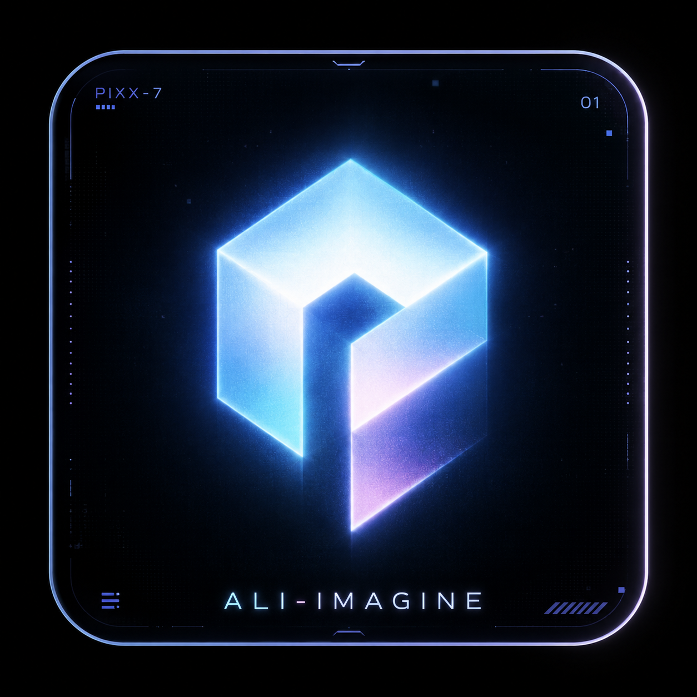
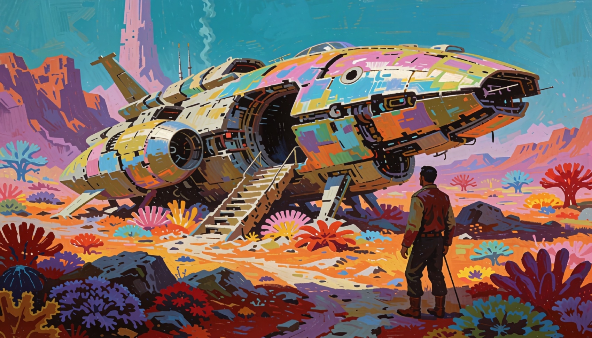
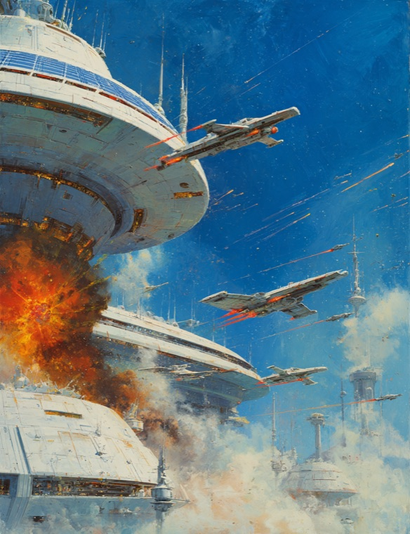

Teach the project what matters.
Collect references, character sheets, guidance, datasets, and certified adapters as reusable creative knowledge.
Build reusable Concepts. Generate images and video. Restore, upscale, compare, and preserve every creative decision in one private production console.

THE INSTRUMENT
ALi Imagine surrounds the work with only what matters: sources, signal, engine state, outputs, and complete lineage.

ONE CREATIVE TRAIL
No disconnected model buttons. Four clear surfaces, one project, and a recoverable creative trail.
Collect references, character sheets, guidance, datasets, and certified adapters as reusable creative knowledge.
Generate images and video locally or through xAI without changing the project’s core workflow.
Compare, favorite, derive, reveal, export, and revisit every immutable version from a full-screen media surface.
Install and verify local engines, models, credentials, hardware tests, and capability certification explicitly.
DREAM WARP // LOCAL MLX
A recursive local animation path for evolving one to three images into an immutable five-second dream sequence. No network. No disposable result.
PROVIDERS ARE PLUGINS
The project and its assets do not belong to an API. Engines execute recipes; they do not own the system.
Fast Apple Silicon image generation, image transformation, Concepts guidance, and Creative Enhance.
METAL · BF16 · OFFLINECertified text-to-video, image-to-video, first-and-last-frame control, restoration, and spatial upscaling.
METAL · BF16 · PERSISTENT QUEUERemote image generation, editing, video generation, video editing, and extension through one adapter.
KEYCHAIN · ASYNC · LOCAL DOWNLOADASSET-FIRST
Every output retains its source, signal, seed, engine, model, adapter, settings, checksum, timings, and parent version. Originals are never overwritten. Every operation derives.

ALi IMAGINE v0.4.6
The macOS app installs from one DMG. Local models remain explicit, app-managed downloads and survive application updates.